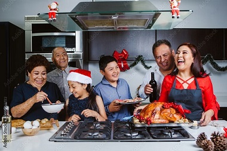

Qui suis-je et quel est le concept de mon food truck?
Bonjour, je m'appelle Pedro Alvàrez, un chef réputé spécialisé dans la cuisine mexicaine et je suis fier de
vous présenter mon projet de food truck, "El Hombre Loco" !
"El Hombre Loco" est un food truck de cuisine mexicaine, avec des plats typiques tels que des tacos, des
quesadillas, des enchilada et bien plus encore, mes clients peuvent voyager au Mexique a travers les plats
que je confectionne avec amour!
Le nom "El Hombre Loco", qui signifie "L'homme fou", vient du fait que la nourriture mexicaine est très
épicée, si épicée qu'elle vous rendra fou/folle!

Mon histoire

Depuis ma plus tendre enfance, ma passion a toujours été la cuisine, j'ai toujours aimé préparer des repas
avec ma famille, à travers les recettes de cuisines, je peux m'exprimer, montrer ma personnalité et devenir
moi-même.
Quand j'étais adolescent, je suis allé au Mexique pour les vacances, j'ai vraiment aimé le pays et j'ai été
impressionné par la nourriture, les tortillas, les quesadillas et les épices. Quand je suis revenu de ce
voyage, ma passion pour la cuisine avait grandi et j'ai décidé d'étudier dans le domaine de la cuisine pour
approfondir cet passion. C'est aussi à ce moment-là que l'idée de créer un food truck à base de produits
mexicains m'est venue.
Ma devise est de partager ma passion de la cuisine et de la culture mexicaine avec les clients. À travers
mon food-truck, je veux apporter des recettes typiquement mexicaines de niveau gastronomique, cuisinées à ma
façon avec des produits frais et de qualité.
l'éthique de mon food-truck
Les produits que j'utilise pour réaliser mes plats sont bio et viennent d'agricultures respectueuse de
l'environnement et respectueux de la protection animale.